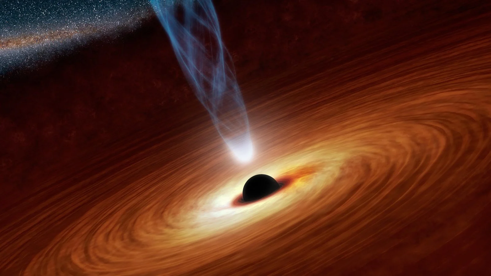
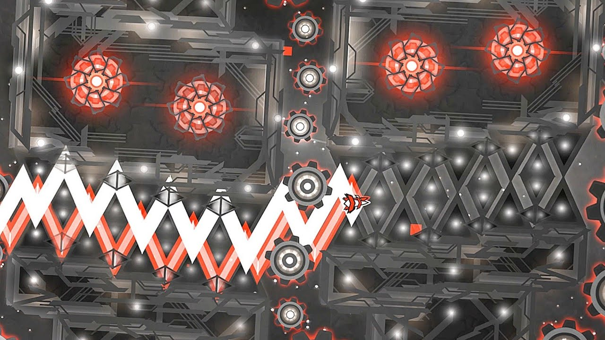

Tonantzintla 618 ou TON 618 (abrégé) est un quasar très lointain et hyper-lumineux (un des plus lumineux de l'Univers connu), à puissant rayonnement infrarouge et large spectre d'absorption. Situé à proximité du pôle Nord galactique dans la constellation des Chiens de chasse, à 10,4 milliards d'années-lumière de la Terre, il contient le trou noir supermassif le plus massif connu à ce jour, de plus de 66 milliards de fois la masse du Soleil dans un rayon de 1 301 unités astronomiques (environ 190 milliards de kilomètres).

TON 618, en tant que quasar, est supposément un disque d'accrétion de gaz extrêmement chaud, tourbillonnant autour d'un gigantesque trou noir supermassif au centre d'une galaxie
source: Wikipédia
